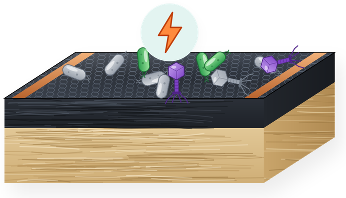

Antimicrobial & antiviral surfaces
Graphene surfaces that inactivate bacteria and viruses using low voltage, light, or both.
- Graphene-coated air filters: ~99% bacterial and 100% viral removal at ~0.3 VACS Appl. Mater. Interfaces 2021
- Graphene composite adhesive tape: up to 99.99% bacterial killing with light plus currentCarbon 2022
- LED-activated carbon nanomaterial surfaces: up to 99.1% killing in 20 minutesACS Appl. Mater. Interfaces 2026
- LIG-wrapped tri-metal organic framework and silver-doped LIG compositesAdv. Eng. Mater. 2024 · Environ. Sci.: Nano 2024